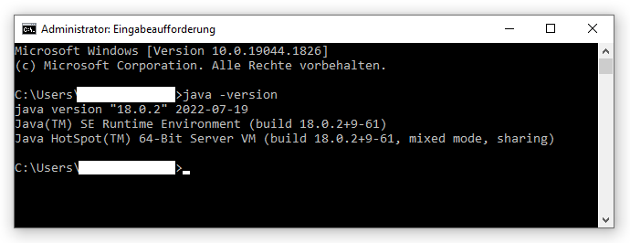

This guide will explain everything you need to start programming with MuLE.
MuLE is powered by Java, which makes it platform independent, however you need to have at least Java 8 running on your machine.
If you are not sure if Java is already installed and which version you have, you can enter the command java -version in you command line interface, e.g. cmd.exe on Windows.

You can get the current version of Java at https://www.oracle.com/java/technologies/downloads/
The tool support for MuLE is provided by the Eclipse integrated development environment.
You can download prepackaged Eclipse from these links:
However, if you want to download and configure your own Eclipse, instead of downloading any of the above erchives, you need to follow the installation instructions.
Follow these steps ONLY if you have chose not to use one of the prepackaged Eclipse archives.
ATTENTION: the MuLE plugins make changes to the Eclipse user interface. You are advised to use a separate Eclipse installation for MuLE.